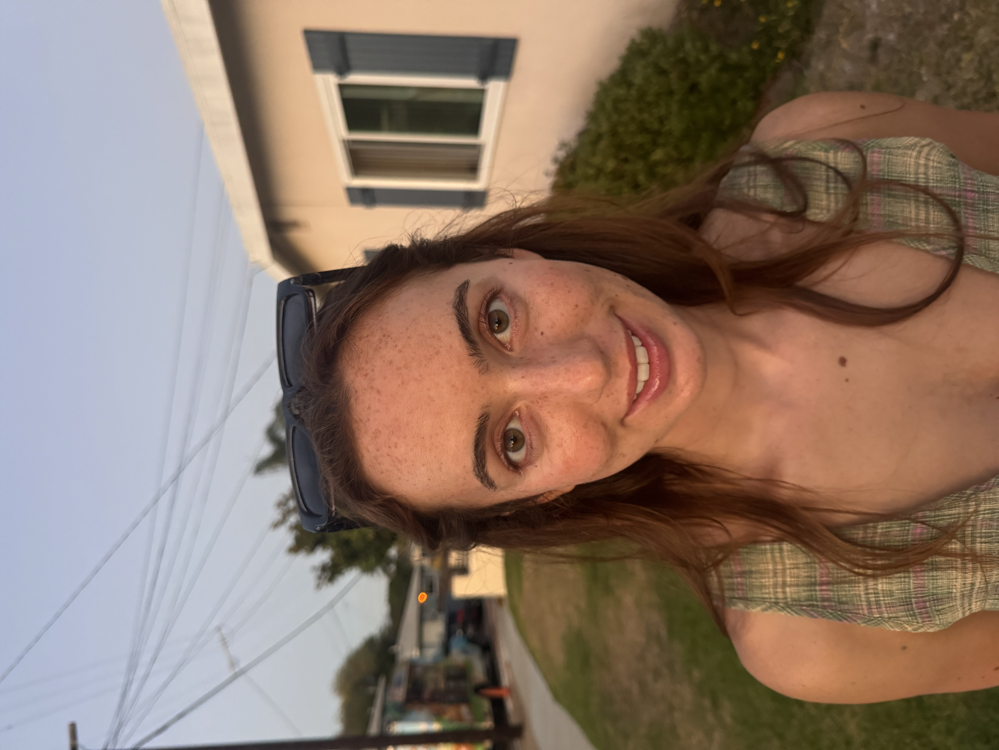
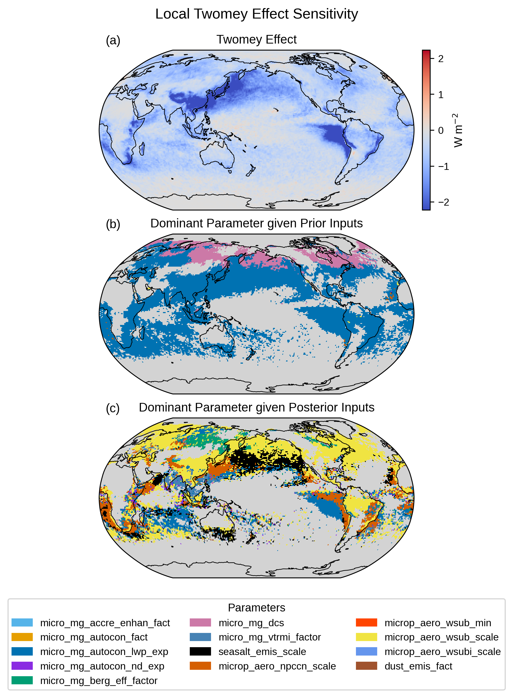
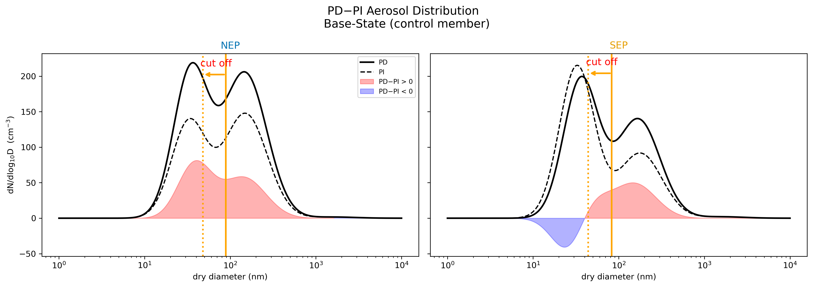
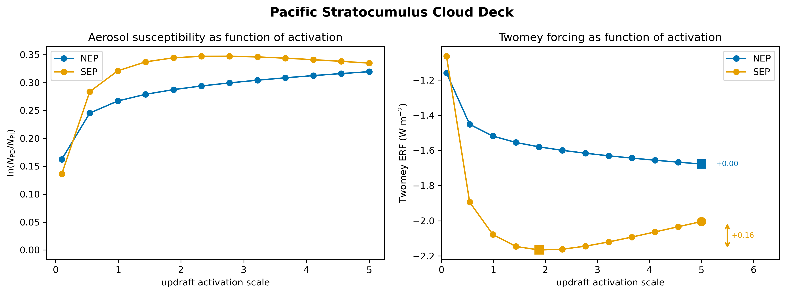

My research aims to reduce uncertainty in the effective radiative forcing from anthropogenic aerosols by examining how aerosol–cloud interactions are represented in global climate models.
Climate models use uncertain parameters to represent aerosol–cloud processes. To identify which parameters are most important, scientists commonly use a multitude of simulations where these parameters are varied uniformly. We show that restricting our analysis to simulations matching the base cloud state gives a different and more meaningful answer about which parameters drive the Twomey effect. This study provides a simple, model-agnostic framework for a constrained global sensitivity analysis, through which we find regime-based dependence of parameter sensitivity for the Twomey effect. Read the preprint.

Click to enlarge
Stratocumulus cloud decks are among the most climatically important cloud regimes, yet how their microphysical and macrophysical properties respond to aerosol perturbations remains uncertain. This work examines how aerosol size distribution shapes the cloud droplet activation response of the Twomey effect across the northeast and southeast Pacific stratocumulus decks. We find that differences in pre-industrial aerosol loading lead to distinct activation regimes that modulate the magnitude and sensitivity of the Twomey radiative forcing. (in preparation)


Click to enlarge
I am interested in how localized brightening of low marine clouds feeds back onto large-scale atmospheric dynamics. This proposed project uses idealized cloud plume experiments to map how cloud perturbations propagate into dynamical responses. I hope to decompose the response into the fast atmosphere-only response and the slow coupled ocean-atmosphere response. (in conceptualization)